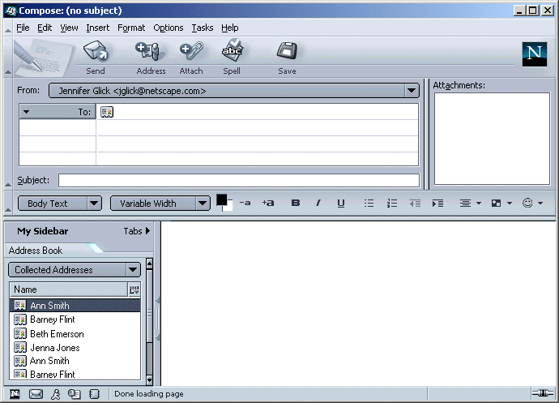

|
Mail: Sidebar Tab |
UI Specification
|
|
Sidebar Tab: Address Book |
Last Modification: |
|
Author: Jennifer Glick |
Status: Implementable |
||||||||||||
|
Quicklinks: |
Feature Team
|
A Sidebar tab which lists the user's Address Books and contents. Gives users the ability to access their address books from any window with a sidebar. Promotes more usage of the Address Book.
Address Books and Address Book entries in the Sidebar are listed in the order specified in the Address Book component.
Users can select the Address Book entries they would like to display be using the address book selection dropdown. Double clicking on an entry opens a message compose window with the e-mail address(es) of the item(s) selected prefilled, and the subject field focused. Users can also drag and drop entries from the sidebar to the address area.
By default the Name column is displayed. The column selector widget can be used to add additional columns. Any columns available in the full address book are available here.
Quick Search functionality is also available in the AB Sidebar tab using the text field provided below the Address Book selector widget As the user types, the list of address book card entries is updated to match.
A content menu provides additional functionality.
The Sidebar could also be available in a Mail Compose window, but not shown by default (many users may find the Sidebar distracting in Mail Compose). If the user has the Address Book Sidebar open in a Mail Compose window, the "Address Book" tab would be the only default tab. This would enable users to quickly select recipients for a mail message.
Double clicking on an entry would add the entry to the addressing area.
